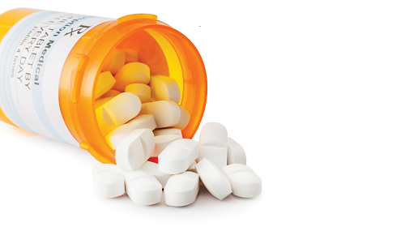
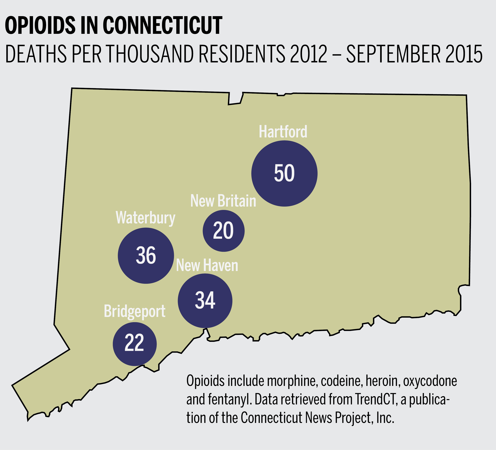

Opiod Addiction
Is SERIOUS

Between 2012 and 2017 there have been over 4,000 deaths related to opiods
in the state of Connecticut. That number is on the rise as the average deaths per month approaches
one hundred. Opiod addiction is a serious issue and the only way to fight it is to be informed! If
you know someone who may be sufferning from opiod addiction or if you believe that you are, please
use the resources provided here to help. We have a countdown timer to help motivate you to become
sober and a map that allows you to see where rehab center in CT are.
We want to help you help yourself. There are many people who are suffering the
same as you, and we need to support one another. If you feel that you or someone you know is in need
this website is here to help you as best as it can. Opiod addiction is a serious matter and a rising
issue in not only the country but specifically CT. You are the only one in control of yourself and you
able to make a diffenrence in this fight.


Addiction is a powerful mistress. Overcoming addiction is not something that is easily achived. You need help.
You need people by your side who love and support you to help you though it. There are people out there, professionals,
who are there to help you. All you have to do is ask.